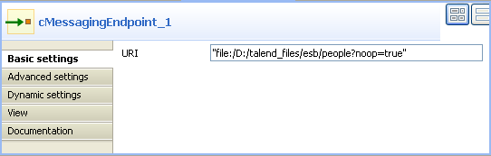
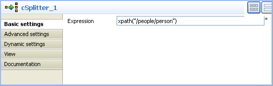
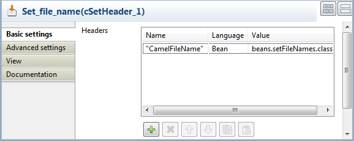
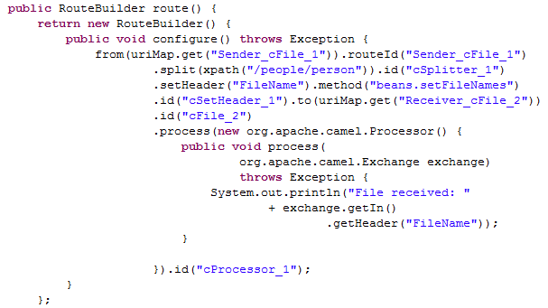
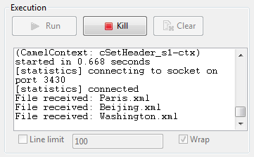

Famille de composant | Transformation | |
Fonction | Le composant cSetHeader définit des en-tête pour chaque message qui lui est envoyé. | |
Objectif | Le composant cSetHeader est utilisé pour définir des en-tête ou personnaliser les en-tête par défaut, s'il y en a, dans chaque message qui lui est envoyé pour traitement subséquent du message. | |
Basic settings | Headers | Cliquez sur [+] pour ajouter au tableau autant d'en-tête que nécessaire. |
|
Name |
Saisissez le nom de l'en-tête du message. | |
| Language | Sélectionnez soit Bean si vous souhaitez appeler un Bean Java pour retourner la valeur de l'en-tête, soit le langage de l'expression que vous utilisez, parmi None, Constant, EL, Groovy, Header, JavaScript, JoSQL, JXPath, MVEL, OGNL, PHP, Property, Python, Ruby, Simple, SpEL, SQL, XPath et XQuery. | |
| Value | Saisissez soit l'expression pour définir la valeur de l'en-tête du message, soit la classe Bean qui va retourner une valeur pour l'en-tête du message, sous la forme beans.NOM_BEAN |
Utilisation | Le cSetHeader est utilisé en tant que composant intermédiaire dans une Route. | |
Limitation | n/a | |
Dans ce scénario, un message de fichier contenant des informations relatives à des personnes est divisé en sous-messages. Chaque sous-message est renommé selon le nom de la ville qu'il contient et est ensuite routé vers un autre endpoint.
Voici un exemple de fichier XML utilisé dans ce scénario :
<people>
<person>
<firstName>Pierre</firstName>
<lastName>Dubois</lastName>
<city>Paris</city>
</person>
<person>
<firstName>Nicolas</firstName>
<lastName>Yang</lastName>
<city>Beijing</city>
</person>
<person>
<firstName>Ellen</firstName>
<lastName>Ripley</lastName>
<city>Washington</city>
</person>
</people>Un Bean Java prédéfini, setFileNames, est appelé par le composant cSetHeader utilisé dans ce scénario pour définir un nom de fichier pour chaque message selon le nom de la ville qu'il contient. Pour plus d'informations concernant la création et l'utilisation de Beans Java, consultez le Guide Utilisateur de Talend Open Studio for ESB.
package beans;
import org.w3c.dom.Document;
import org.w3c.dom.Element;
import org.w3c.dom.NodeList;
public class setFileNames {
public String getCityName(Document document) {
NodeList cities = document.getDocumentElement().getElementsByTagName(
"city");
Element city = (Element) cities.item(0);
String textContent = city.getTextContent();
return textContent+".xml";
}
}Ce scénario utilise deux composants cFile, un comme émetteur des messages et un comme récepteur, un cSplitter pour diviser le message source en sous-messages, un cSetHeader pour renommer chaque sous-message et un composant cProcessor pour afficher le nom de fichier de chaque message routé vers le récepteur.

Dans la Palette, développez le dossier Messaging et déposez deux composants cFile dans l'espace de modélisation graphique.
De la famille Routing, déposez un composant cSplitter dans l'espace de modélisation graphique, entre les deux composants cFile.
De la famille Transformation, déposez un composant cSetHeader dans l'espace de modélisation graphique, entre le cSplitter et le cFile récepteur.
Cliquez-droit sur le premier cFile, sélectionnez Row > Route dans le menu contextuel et cliquez sur le composant cSplitter.
Cliquez-droit sur le cSplitter, sélectionnez Row > Split dans le menu contextuel et cliquez sur le composant cSetHeader.
Cliquez-droit sur le composant cSetHeader, sélectionnez Row > Route dans le menu contextuel et cliquez sur le second cFile.
Cliquez sur le second composant cFile, sélectionnez Row > Route dans le menu contextuel et cliquez sur le composant cProcessor.
Renommez les composants afin de mieux identifier leur rôle dans la Route, comme ci-dessus.
Double-cliquez sur le composant cFile nommé Sender pour afficher sa vue Basic settings.
Dans le champ Path, saisissez le chemin d'accès au dossier contenant les fichiers source ou parcourez votre système jusqu'au dossier correspondant.
Dans la liste Encoding, sélectionnez le type d'encodage de vos fichiers source.
Dans le champ FileName, saisissez le nom du fichier du message source. Vous pouvez passer cette étape si le dossier source contient un seul fichier.
Répétez les étapes 1et 2 ci-dessus pour définir le chemin d'accès au fichier de sortie ainsi que le type d'encodage dans la vue Basic settings de l'autre composant cFile nommé Receiver. Laissez le champ FileName vide.

Double-cliquez sur le composant cSplitter pour afficher sa vue Basic settings et renseignez le champ Expression avec l'expression selon laquelle vous souhaitez diviser le message source.
Dans ce scénario, divisez le message en sous-messages à chaque nœud person du fichier XML, saisissez
xpath("/people/person").Double-cliquez sur le composant cSetHeader nommé Set_file_name pour afficher sa vue Basic settings.
Cliquez sur [+] pour ajouter une ligne au tableau Headers.
Dans le champ Name, saisissez le nom de l'en-tête que vous souhaitez donner aux messages.
Définissez le nom de fichier pour chaque message entrant, saisissez
"CamelFileName"comme nom de l'en-tête.Sélectionnez Bean dans le champ Language et saisissez le nom du Bean Java prédéfini dans le champ Value,
beans.setFileNames.classdans ce scénario.Double-cliquez sur le composant cProcessor pour afficher sa vue Basic settings et personnaliser le code afin que les informations s'affichent comme vous le souhaitez.
Dans ce scénario, vous souhaitez afficher le nom du fichier de chaque message routé vers l'endpoint récepteur, personnalisez donc le code comme suit :
System.out.println("File received: "+ exchange.getIn().getHeader("CamelFileName"));Appuyez sur Ctrl+S pour sauvegarder votre Route.
Cliquez sur l'onglet Code dans l'espace de modélisation graphique pour visualiser le code généré.
Comme affiché dans le code, une route de messages est construite d'un (
from) endpoint à (.to) un autre et, lors du routage, le message source est divisé selon la conditionxpath("/people/person")par lecSplitter_1. Chaque sous-message obtient un en-tête nomméCamelFileName, la valeur retournée par.method(beans.setFileNames.class).Cliquez sur la vue Run pour l'afficher et cliquez sur le bouton Run pour lancer l'exécution de votre Route. Vous pouvez également appuyer sur F6 pour l'exécuter.
Résultat : Le message source est divisé en sous-messages. Chaque sous-message est renommé d'après le nom de la ville qu'il contient et routé vers l'endpoint récepteur.
Pour plus de scénarios, consultez :